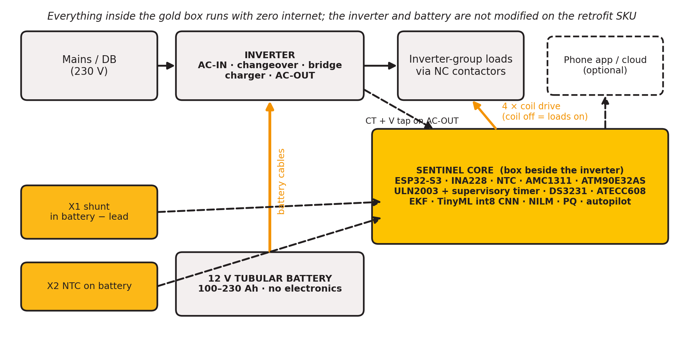
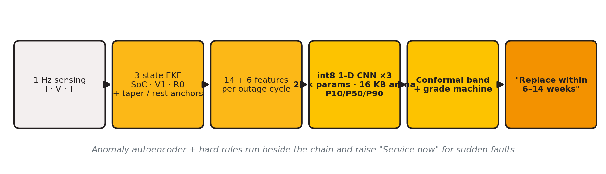
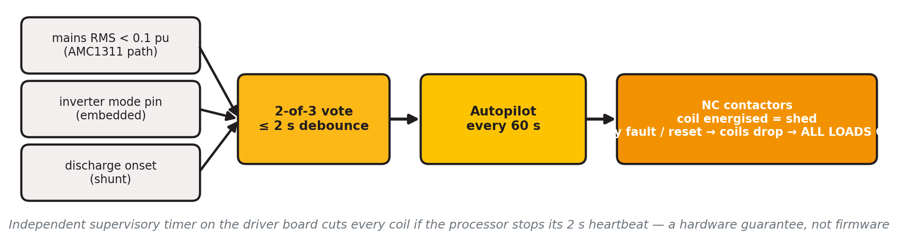
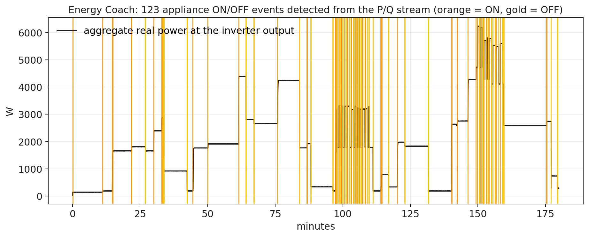
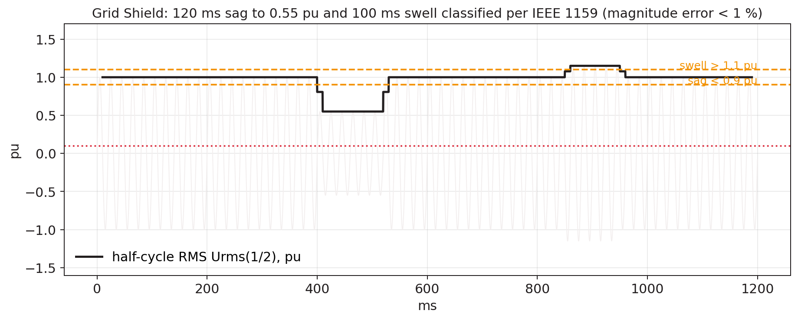
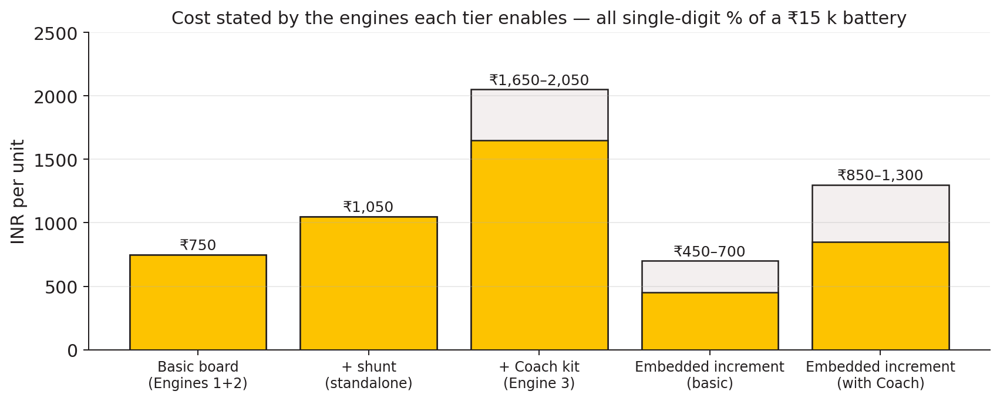
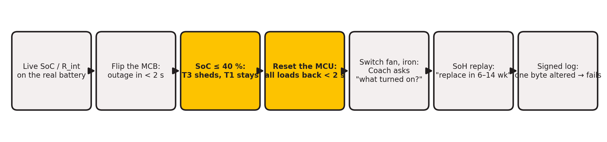
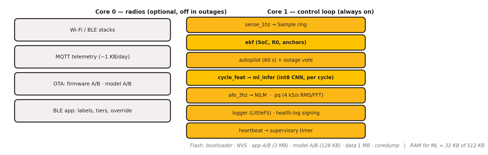

V-Guard Sentinel
A simulation-backed design for an offline AI core that gives the home inverter a battery-health estimate, safe load control, appliance insight, and a path to fleet learning.
Team Codey Tingle (TI3271) · Ayush Manoj Garg · Eshan Shukla · Tanay Chaplot
Report ↔ prototype reconciliation · September 2026
The battery is the silent point of failure
- Problem: an inverter can switch quickly but usually cannot estimate how its battery is ageing.
- Cost: an unexpected battery failure interrupts food storage, work, study, connectivity, and medical loads.
- Opportunity: turn existing voltage, current, temperature, and load signals into an offline decision layer.
The report’s market, outage, and lifetime figures are design inputs. The repository does not claim field validation or measured product savings yet.
What Sentinel is — and what it is not

Retrofit reality: the battery current stays in an external shunt or Hall sensor. The module reads a signal, watches inverter AC output through a metering path, and drives external contactors. The battery and inverter have not been physically modified or tested in this project.
Four engines, one proposed core
1 · Battery health
EKF plus a small int8 CNN estimates SoH/RUL bands from synthetic cycle features. A warning is a window, never a date.
2 · Autopilot
Deterministic tiers and hysteresis protect essentials. The current prototype evaluates the controller in scripted scenarios.
3 · Energy Coach / Grid Shield
NILM and power-quality code consume synthetic AC streams. A metering AFE is designed but not bench-validated.
4 · Fleet learning
Central-learning telemetry is designed. Flower/Secure Aggregation/DP are specified but deliberately deferred from this prototype.
Engine 1 · From simulated signals to a health band

- Inputs: simulated 1 Hz I/V/T streams reduced to 14 dynamic and 6 static features per cycle.
- Model: 1-D CNN, three seeds, quantile heads, conformal calibration, and a grade state machine.
- Pending: real tubular-battery ageing labels and ESP32-S3 execution.
Engine 1 · What the current artifacts show

Engine 2 · Autopilot protects essentials

- T1 essentials stay on.
- T2 defer at 55%; restore at 70%.
- T3 shed at 40%; restore at 55%.
- Hysteresis and dwell timers prevent chatter.

Simulation status: Python/C parity and scripted scenarios are implemented. Contactors, watchdog hardware, and a real inverter have not been tested.
Engine 3 · Coach and Grid Shield

- Event detector and appliance matching run on simulated P/Q streams.
- Scope is directional: large loads and per-home calibration.

- Half-cycle RMS and FFT logic classify simulated sags, swells, and THD.
- AFE, CTs, reference meter, and live AC waveform capture remain unbuilt.
Two SKUs keep the claims honest

Embedded
Designed for a compatible new inverter. Charger control and any life-extension claim belong here, subject to ageing-campaign evidence.
Retrofit
External shunt, AC metering path, contactors, and advisory charging. It cannot command an unknown analogue charger.
The revised design adds the AFE, RTC, secure element, DAC, and supervisory timer omitted from the report’s first BOM.
What is implemented in software
- 1 Hz synthetic tubular duty-cycle simulator and feature extraction.
- EKF, autopilot, NILM, PQ, charging policy, and health-log reference implementations.
- Three-seed int8/TFLite export artifacts and a C golden self-test.
- Dashboard fixture and file providers with provenance labels.
- Host firmware links the real C control modules against replayed CSV data.
- NASA/CALCE loaders and Stage A/B/C scaffolding exist, but real-source training is incomplete.
- Hardware tests, ESP-IDF build, sensor drivers, and ATECC608 provisioning remain open.
Verification note: this deck reports repository artifacts and documented runs. It does not present them as practical experiments.
How one simulated outage moves through the system

Cluster-of-homes view: central learning path
synthetic duty
hot condition
partial SoC
consented, pseudonymised summaries
replay next run
What is simulated
Different household duty cycles, temperatures, loads, and battery trajectories.
What is not claimed
No live homes, no field telemetry, no deployed fleet, and no measured privacy budget.
Federated status
Flower, Secure Aggregation, and DP-FTRL are designed but deliberately deferred from this prototype.
Self-contained by construction — on paper and in replay

Current evidence: host C build, replayed CSV, int8 golden self-test, and dashboard JSON. Pending: ESP-IDF compilation, flashing, real-time timing, power measurement, sensor drivers, secure boot, and hardware fault injection.
Corrections made after engineering review
OCV correction
Float voltage is not open-circuit voltage. Use charge-current taper and true charger-off rest.
Signal boundary
A battery shunt cannot disaggregate AC appliances. Add an AC metering front end and CT path.
Charging boundary
Adaptive charging is embedded-SKU only; retrofit is advisory unless a verified charger interface exists.
Model boundary
Real tubular accuracy waits for the ageing campaign. Synthetic metrics are pipeline evidence only.
Federated boundary
Central summaries are the current path. Federated learning is specified, not demonstrated.
Terminology
ESP32-S3 vector/SIMD extensions and milliamp-class draw replace “neural accelerator” and “microamp” wording.
What must happen before product claims
Gate 1 · Tubular data
Age 24–36 representative batteries across temperature, depth of discharge, and charge regime. Establish real SoH labels and estimator tables.
Gate 2 · Bench hardware
Build the sensor/AFE/contactor path, compile ESP-IDF, flash the ESP32-S3, and measure timing, draw, fail-safe behaviour, and PQ/NILM against reference instruments.
Gate 3 · Field pilot
Run monitored units, validate warnings against actual replacements, and only then quantify life extension, backup gains, warranty savings, or fleet learning.
Decision rule: no real-battery accuracy number, life-extension percentage, or installed-fleet claim should appear without the corresponding gate evidence.
A credible prototype starts by saying exactly what it has not tested.
The repository demonstrates the algorithms, replay path, host firmware, dashboard, and evidence boundaries. Real batteries, real homes, real ESP32 hardware, and field experiments are the next gates.
V-Guard Sentinel · Team Codey Tingle (TI3271)
github.com/epshukla/vguard-sentinel